Printzesa kartzelean dagoenean, bertan izar moduko objetu batzuk egongo dira sakabanatuta. Printzesak kartzeletik irten ahal izateko, izar horiek hartu beharko ditu, bere puntuazioa handituz. Baina kontuz ibili beharko da, mamuak baitaude. Printzesak mamuak hiltzeko aukera du sua botaz, eta 3 bizitza izango ditu. |
MAMUAK 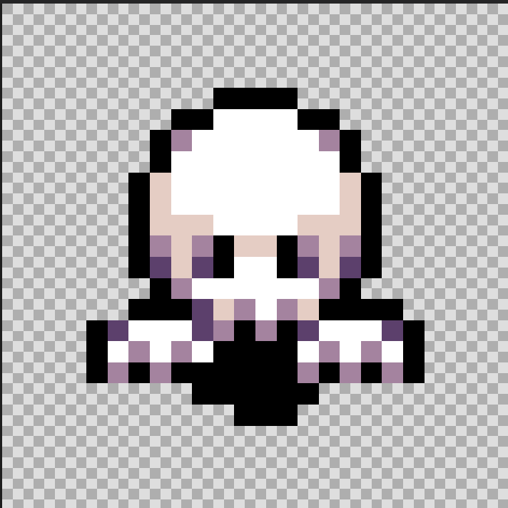 |
IZARRA 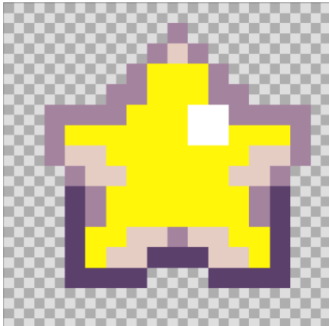 |
SUA 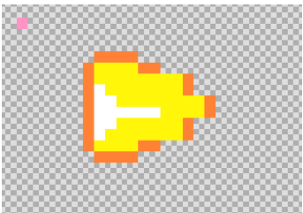 |
BIZITZAK 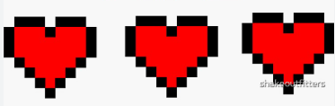 |
|
Printzesa kartzelatik objetu guztiak bildu eta gero kartzelatik irteteko aukera izango du. Mendi batean azalduko da, bi bizitza izango ditu. Bertan, marrubiak hartu beharko ditu menditik joan ahal izateko. |
SORGINAK 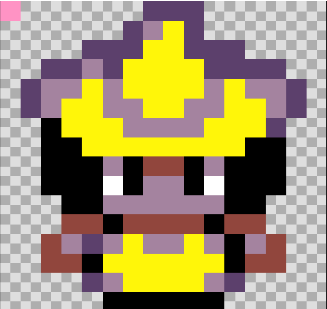 |
MARRUBIAK 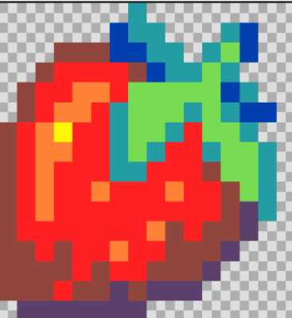 |
SUA |
BIZITZAK 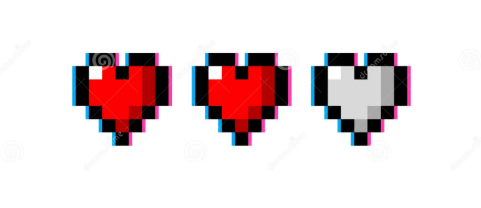 |
|
Printzesak marrubi guztiak hartu eta gero menditik aterako da eta beste zelai batean azalduko da non bizitza bat soilik izango duen. Bertan, pozoia hartu beharko du printzesak. Ehiztariak egongo dira altxorra zaintzen, printzesak altxorratik giltza hartu ahal ez izateko. |
EHIZTARIAK 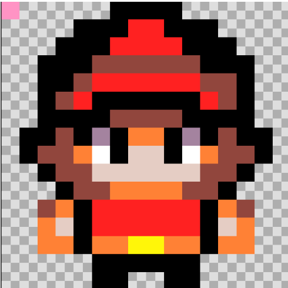 |
POZOIAK 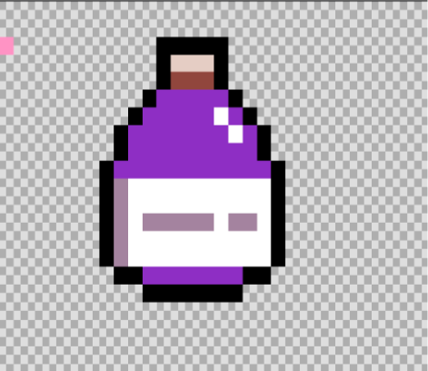 |
SUA |
BIZITZAK 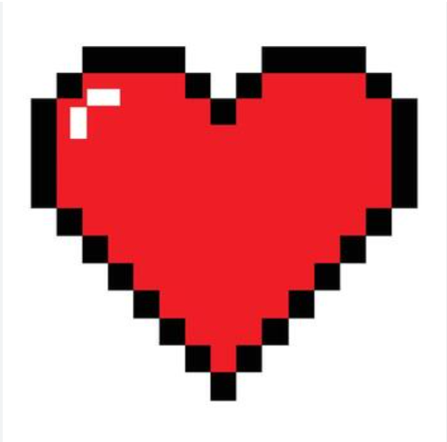 |
GILTZA 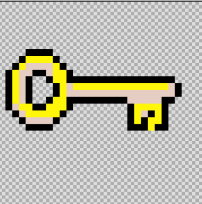 |
Etxea ikutzerakoan printzesa irabazi egingo du jolasa, eta arriskutik seguro egongo da etxean. |
ETXEA
|